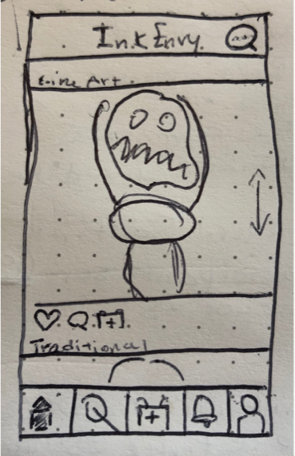
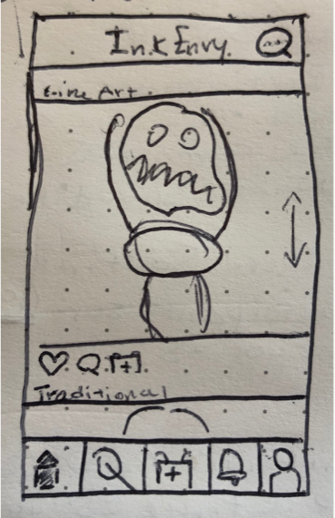

Overview
Project Brief
The goal of Ink Envy, was to create a mobile app that makes it easier for tattoo artists and customers to connect. The app will make use of social media, have a reliable review system, a simple but extensive searching capability, a scheduling and messaging feature, and a way to explore new and trending artists. Additionally, it will appeal to travelling artists and customers, a widely underserved market.
My role
Ink Envy was an entirely independent project. I was responsible for
everything from researching the competitive market, to designing the
finished user interface. I conducted research, strategized effective
solutions, designed the interface, and conducted user testing with my
target audience at multiple stages.
Timeline and Tools
July - October 2019
Paper-pencil, Sketch, Invision
The Challenge
Tattoos are incredibly popular - 36% of 18-25 year olds and 40% of 36-40 year old have tattoos. It is a 1.65 billion dollar business in America. The challenge was to create an app that helps users explore inspiration for tattoos, connect with artists, and increase customer satisfaction.
All statistics can be found here: https://www.statisticbrain.com/tattoo-statistics/
Features for Users
- Follow Artists
- Book Appointments
- Save Photos
- Message Artists
- Read certified Reviews
- Connect with Traveling Artists
Features for Artists
- Book More Appointments
- Set a travel schedule and get appointments before you arrive
- Reach more customers
- Integrate with Instagram and publish photos on both platforms in one place
- Get certified reviews and enhance your trust with customers around the world
Approach
Ink Envy was designed with a user-centric mobile first approach, based on heuristic research, validated assumptions and repeated user testing.
Competitive Research
Introduction
I began the project by conducting extensive research into the existing market of tattoo related apps and quickly discovered two important direct competitors - InkHunter and Tattoodo. Then, I analyzed these apps and their market presence in order to strategize ways Ink Envy could stand out by offering solutions to unmet needs.
InkHunter
An augmented reality app that allows users to test tattoo ideas in real
time through their phone’s camera.
While the AR portion of InkHunter works very well and is simple to learn,
the app lacks some major features that limits the user’s experience.
For example, the app advertises that users can follow artists, but this
simply redirects users to the artist’s Instagram page. Additionally, the
app prompts to browse as either guests or account holders, however it
restricts guests from then creating an account unless the app is
re-downloaded.
Tattoodo
A large desktop and mobile platform that helps tattoo artists display
their work and connect with customers. Over 300,000 artists have signed
up to display their work on Tattoodo and they have raised over $15
million in funding since 2013.
Tattoodo’s strengths lie in its booking platform. It is the only tattoo
focused app that allows users to connect and book appointments with
artists in-app.
However, the app has some significant usability problems. For one, the
app also does not allow users to search by location and style at the
same time, which my research has shown to be an important feature for
users.
Moreover, the overall aesthetic of the app feels dated and lacks an
aesthetically pleasing user interface.
User Research
Summary
My user research research began with conducting interviews with those in my network that fit the demographic I was targeting, people who either had tattoos or had an interest in getting them. This process gave me insights into existing tattoo apps and users’ needs, goals, and frustrations. Using this data, I created an affinity map, multiple user personas and journeys for both customers and artists. I created personas that were reflective of the wide range of experiences, perspectives and abilities of my audience to best serve users.
Wireframes and Prototyping
Introduction
Once I completed my research, I started designing and curating a card sorting exercise with a sample of my target audience. Then, I began sketching low fidelity wireframes using a pen and some paper, and finally, I turned those hand drawings into high fidelity wireframes using Sketch.
 

High Fidelity Wireframes
- 1
- 2
- 3
- 4
- 5
- 6
Usability and A/B Testing
Introduction
Using my high fidelity prototype, I developed a usability test to see how
easily people within my target audience could complete specific tasks
within the app. All of the tests took place in person and lasted between
10-20 minutes.
I also ran an online A/B preference test with 20 volunteers to discover if
users preferred a dark or light theme.
Script
For a detailed look at the Test Script, including a list of all tasks tested, feel free to explore the complete script here.
Methodology
I conducted 6 usability tests. All tests were done in person, on my personal computer, with an offline version of my app. All tests were recorded using Cloud.io screen recording software.
Results
After conducting the usability tests, I found 2 high priority usability issues with my design, 2 medium priority issues, and 1 low priority issue. Users struggled to get to their messaging inbox from their Appointments screen and they thought the messaging icon I chose was confusing. Both of these issues, along with many more, were fixed in the final updates.
Refining the Design
Once I had finished conducting my usability tests, organizing the data, and ranking the errors by their level of severity, I began to refine the final designs for Ink Envy. This involved making significant changes to the artist’s profile page, changing icons, and adjusting small details to increase the accessibility of the app.
Newsfeed Page Updates
- I changed the booking icon to a button to emphasize it as a CTA.
- I changed the messaging icon to make it more intuitive.
- I split the name and the location of the artist into two lines to make it easier to differentiate between the two pieces of information.
- I changed all of my navigation icons to more pixel perfect versions.
- I enhanced the text size of the tags to make them more accessible.
Appointments Page Updates
- I changed the title of the screen to 'Appointments.'
- I added a message button to the booking card in response to user testing.
- I increased the size of the copy on the bookings card to make it more accessible.
- I changed the Suggested Artists menu to a Past Appointments menu to avoid repetition, as it appears on another page and it is unlikely that a user will want to book several appointments at once.
- I made the past appointments a revolving carousel because it is more aesthetically pleasing.
Artist’s Profile Page Updates
- I added 3 new buttons, including a new book appointment CTA.
- I added tags that help identify an artist’s specialties and allow users to explore similar artists more easily.
- I added an outline for the star and dollar icons to give users more context. This way, the ratings would have tangible meaning for the users.
Finished Product
- 1
- 2
- 3
- 4
- 5